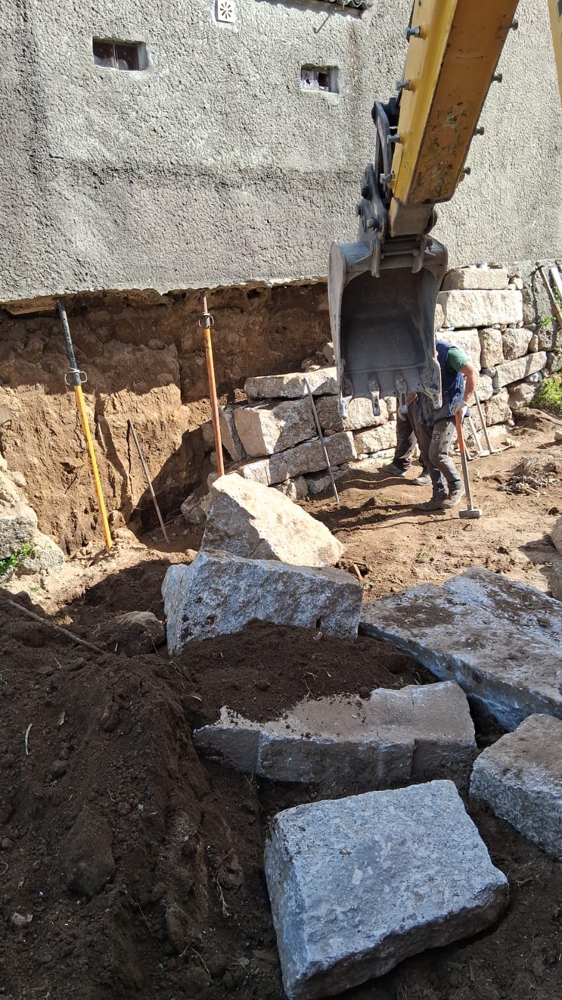
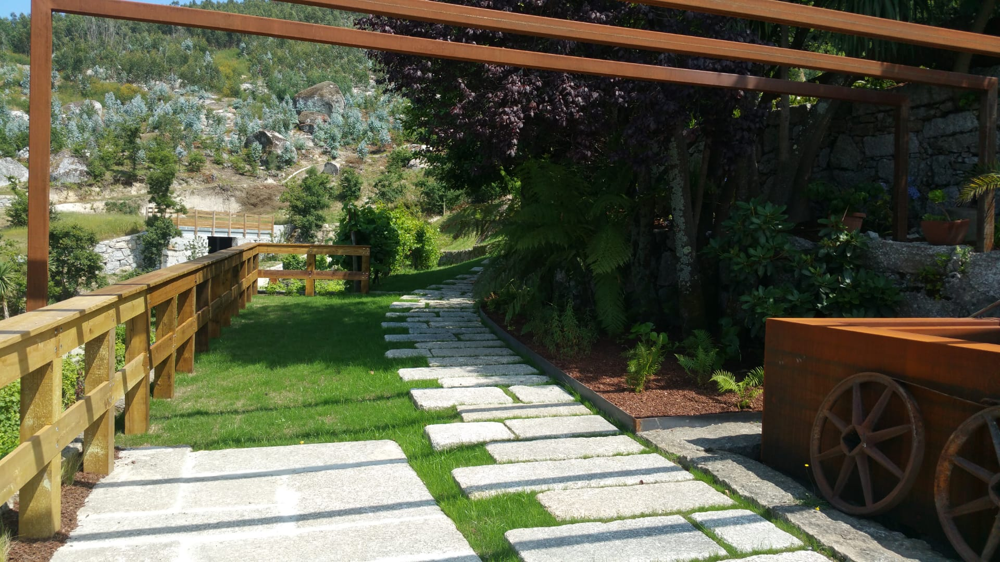
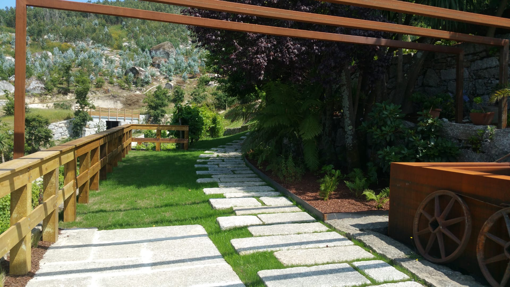
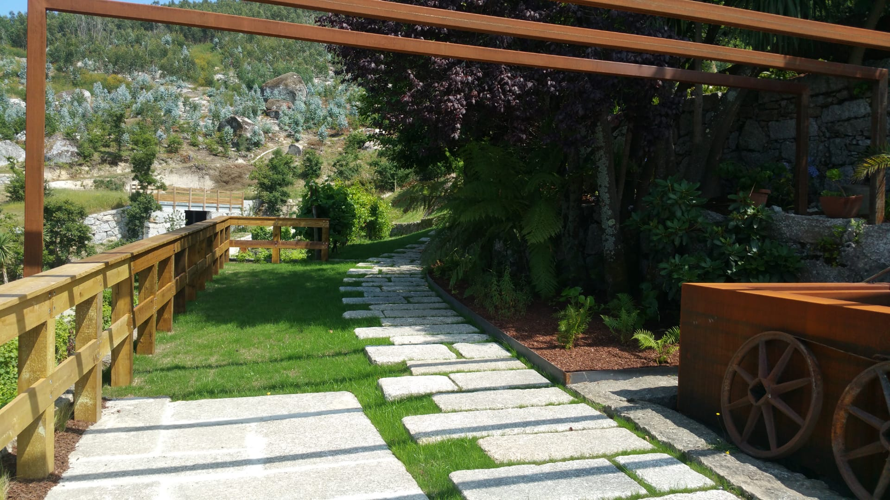
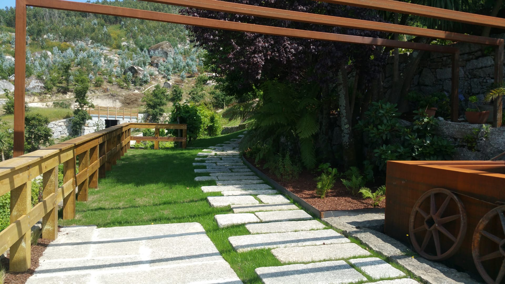

Galeria



 


Com sede em Guimarães, a Motivo Rústico dedica-se à construção de muros em pedra, terraplanagens e limpezas de terrenos. Trabalhamos com dedicação, respeito pela terra e paixão por fazer bem feito.
A Motivo Rústico nasceu das mãos de Nelson Silva, mais conhecido por Nelson Carneiro, um homem profundamente ligado à terra, ao mundo rural e às tradições. Desde pequeno que as máquinas o fascinavam — o barulho dos motores, o cheiro da terra, o trabalho físico — tudo isso foi moldando um espírito determinado e apaixonado por aquilo que faz.
Homem de família e de valores sólidos, Nelson cresceu com o exemplo do seu avô, uma das grandes inspirações da sua vida. Foi ele quem lhe incutiu o gosto pela criação de gado, o respeito pela natureza e a importância de trabalhar com honestidade.
Hoje, essa mesma paixão reflete-se em cada projeto. Muros bem assentes, terrenos limpos, nivelados com precisão e dedicação — são mais do que trabalhos: são compromissos de confiança.
Preparação e nivelamento de terrenos em Guimarães, Braga e Minho para todo o tipo de projetos de construção.
Remoção de vegetação e limpeza florestal para manter os terrenos seguros e preparados para uso em toda a região do Minho.
Construção de muros rústicos e resistentes, com acabamento tradicional e duradouro em Guimarães e arredores.

“Profissionalismo e rapidez. Recomendo a Motivo Rústico para qualquer trabalho de terraplanagem.”
— António, Guimarães
“Excelente qualidade nos muros em pedra! Serviço honesto e muito dedicado.”
— Isabel, Braga
Nelson Silva (Carneiro)
Guimarães, com possibilidade de atuação noutras zonas mediante planeamento.
Tem dúvidas, precisa de um orçamento ou quer saber mais sobre os nossos serviços?
Não hesite — ligue para nós, envie-nos um email ou fale diretamente no WhatsApp.
Email direto: Ct.motivoRustico@gmail.com
 Fale Connosco
Fale Connosco